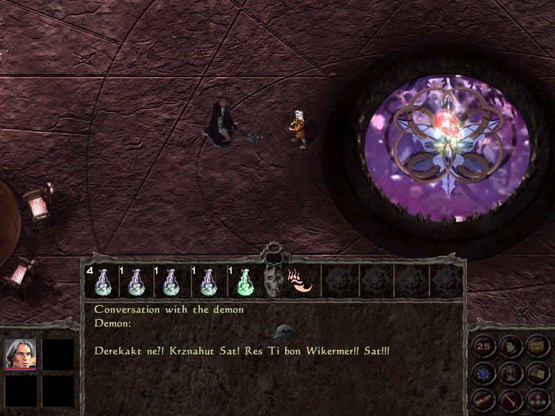
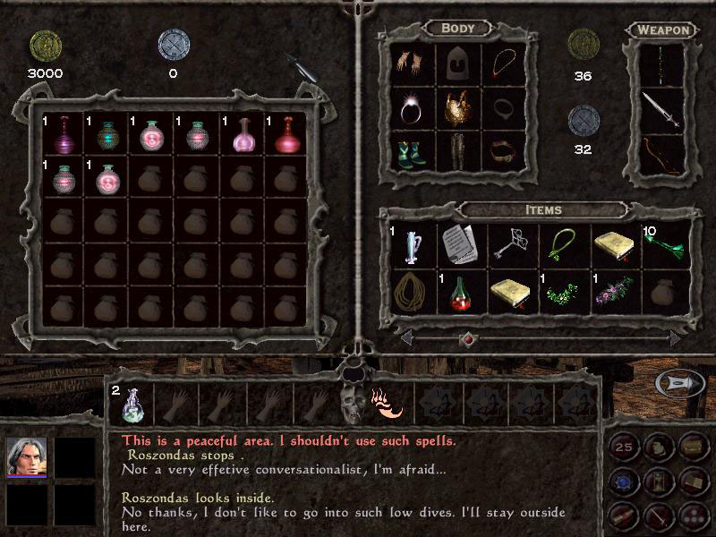

Вот послушайте ребята - небылицу вам скажу: жил - был дракон, великий и могучий. Однажды, темной ночью подбросили ему колыбель с младенцем (видать, добрые родители были). Но дракон оказался хорошим и вселил в ребёнка дар свой и воспитал по образу своему. Годы прошли, сражался Розондас (имя ребёнка) за свой народ против всякой нечисти и геройски (как же иначе) погиб. А через 10 лет - взял да и воскрес. Только вот заработал он типичную для всех магов хворь - амнезию, от которой надо будет, правильно, избавиться и помочь всему честному народу спастись от всяческой нежити. А душам всех умерших нечто мешает покинуть тела их бренные. В общем, идея игры, так сказать, не совсем нова и свежа.
У главного героя есть некоторые отличительные способности, подаренные в своё время папой - драконом. Способности эти можно увеличивать, вот только проявляться они будут исключительно произвольно. Лично мне было очень занятно наблюдать, как в одной из первых миссий на Розондаса накинулась толпа орков, потом половина её - разбежалась, а секунд через 20, видимо передумала и вернулась к атаке. Кроме этой божественной возможности распугивать противников (dragon fear), можно ещё и наносить удары с невиданной силой (dragon strength), увидеть больше пространства вокруг героя (dragon eyes) или извергнуть пламя, сражающее недругов наповал (dragon breath). Чем лучше развиты эти способности (чем больше экспы на них тратится) - тем чаще будут радовать вас этими приятными неожиданностями, и тем сильнее будут они действовать.
Отметить нужно и вот какую оригинальную сторону игры. Оружие - компаньон. В самом начале Gorasul'а игроку предстоит выбрать один из представленных его видов - секира, посох, лук или кинжал. Оружие это будет наглеть и матереть вместе со своим хозяином. То бишь, будет усиляться как произвольно (после очередной победы над монстрами), так и по желанию игрока, который может прокачивать своеобразного напарника. "Как Вы яхту назовёте, так она и поплывёт",- выбранный компаньон, которого и окрестить можно будет по собственному желанию, сначала будет просто давать советы и помогать по вопросам насущным, а затем сам станет определять свою стратегию нападений (кого он атаковать желает, а кого, видите ли, нет).
Изначально Розондас оказывается в собственном замке и находит лишь малую часть своих прежних знаний в своих старых записях и дневниках. Из замка, соответственно, следует выбраться. Вопрос в том: каким образом? Герой только вспоминает, что раньше совершал это с помощью магии. Задача, казалось бы, решена, когда, собрав все возможные рукописи в замке, мы оказываемся возле статуй, телепортирующих на волю. Но вот загвоздка- для того, чтобы выйти, герою следует последовательно ввести четыре ключевых слова в соответствующие им порты. Путём долгих и сложных попыток и стараний выясняется, что ввести следует "Четыре могущественные силы озаряют ночью". И как это прикажете понимать? Всё дело то в том, что множество задачек игры решается именно таким, так сказать, не совсем логичным образом.

Похоже, в нашем замке завелись гости. Почему бы ни воспользоваться этим и ни поклянчить экспы?
Графика Gorasul: The Legacy Of The Dragon не впечатляет. Игра выглядит местами сносно, местами - весьма размыто и не определённо. Что, конечно, не позволяет поставить её в ряд с такими играми, как Baldur's Gate, под которую во многом косили разработчики. А те новинки, которыми нас хотели побаловать, не оправдывают подобного рода оплошности.
Теперь о звуке… Громогласный и жизнеутверждающий голос, слышимый во время заставки изначально прибавляет энтузиазма и заставляет поверить в какие-то инновации, которыми снабдили игру её создатели. Но с начала самого игрового процесса становится ясно - и в этом плане перед нами находится эдакий середнячок. Музыка не вызывает неприятных эмоций, но и не вдохновляет игрока на победы и очередное спасение мира. Первый раз звуки заставляют обратить на себя внимание при возникновении "волнующего" мотива, предупреждающего о появлении коварного скелета - убийцы.
А что, собственно, требуется добавить? Gorasul: The Legacy Of The Dragon - средняя игра, без каких-либо буржуйских излишеств, столь соблазняющих последнее время наш российский народ. Практически ничего лишнего, ничего особенного, ничего цепляющего, а то, что могло бы позволить игре стать примечательной - перекрывается многими недоработками.

За оказанную помощь, жители деревни предоставляют Розондасу скидки